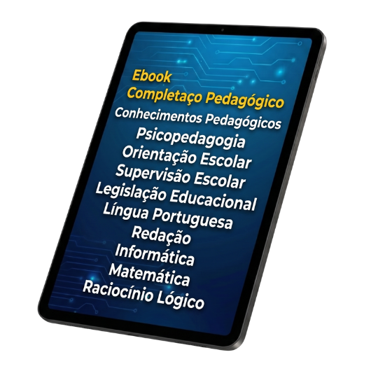

Teoria completa, legislação educacional atualizada, simulados estratégicos e questões comentadas — tudo o que você precisa para estudar com foco no que realmente é cobrado em prova. Método direto ao ponto, sem perder tempo com conteúdos irrelevantes. Estude com estratégia e conquiste sua vaga.
FOCO: Concursos da Área Educacional
Cada elemento foi pensado para maximizar seu aprendizado e suas chances no concurso
Tudo o que as bancas mais cobram em concursos da área educacional — Conhecimentos Pedagógicos, Legislação, Língua Portuguesa, Redação, Informática, Matemática e Raciocínio Lógico. Direto ao ponto para você passar.
Legislação Educacional - Constituição Federal (Educação), LDB, ECA, DCNs, BNCC e PNE - Atualizada, esquematizada e pronta para você gabaritar.
Treine com questões reais das principais bancas e entenda o raciocínio de cada resposta com comentários detalhados, alternativa por alternativa. O método mais eficiente para transformar estudo em aprovação.
Treine com questões reais das principais bancas em um ambiente que simula fielmente o dia da prova — tempo cronometrado, nível de dificuldade real e correção detalhada. O método mais próximo do que você vai enfrentar para chegar preparado no grande dia.
Identifique as armadilhas clássicas que as bancas adoram usar e aprenda a evitar cada uma com estratégias práticas, pegadinha por pegadinha. O método mais inteligente para não perder pontos preciosos.
Aprenda com insights diretos dos tópicos mais cobrados por cada banca e descubra exatamente o que priorizar nos seus estudos, matéria por matéria. O método mais estratégico para focar no que realmente cai na prova.
Todos os tópicos do conteúdo programático de Concursos Educacionais organizados em módulos didáticos
Veja a qualidade do conteúdo e metodologia antes de tomar sua decisão. Baixe agora o primeiro capítulo completo.
Não deixe as disciplinas pedagógicas e básicas tirarem pontos preciosos na sua prova. Invista no material certo e estude de forma estratégica.